1. Förbered SharePoint
Vår IT-support agent behöver data för att kunna svara på frågor. Vi ska nu skapa en SharePoint-sajt som innehåller information om hårdvara (Laptops, skärmar etc.).
För att spara tid använder vi en färdig mall från Microsoft.
Steg 1: Gå till SharePoint
Vi navigerar dit direkt från Power Apps.
-
Klicka på Våfflan (App launchern) bestående av 9 prickar högst upp i vänstra hörnet.
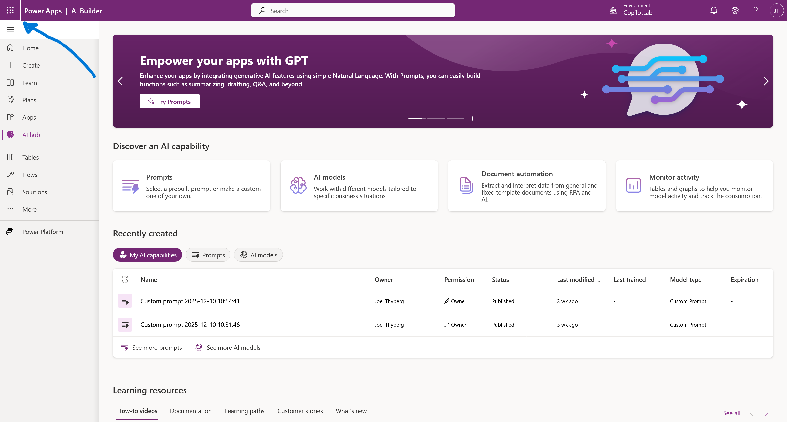
-
I menyn som fälls ut, klicka på SharePoint.
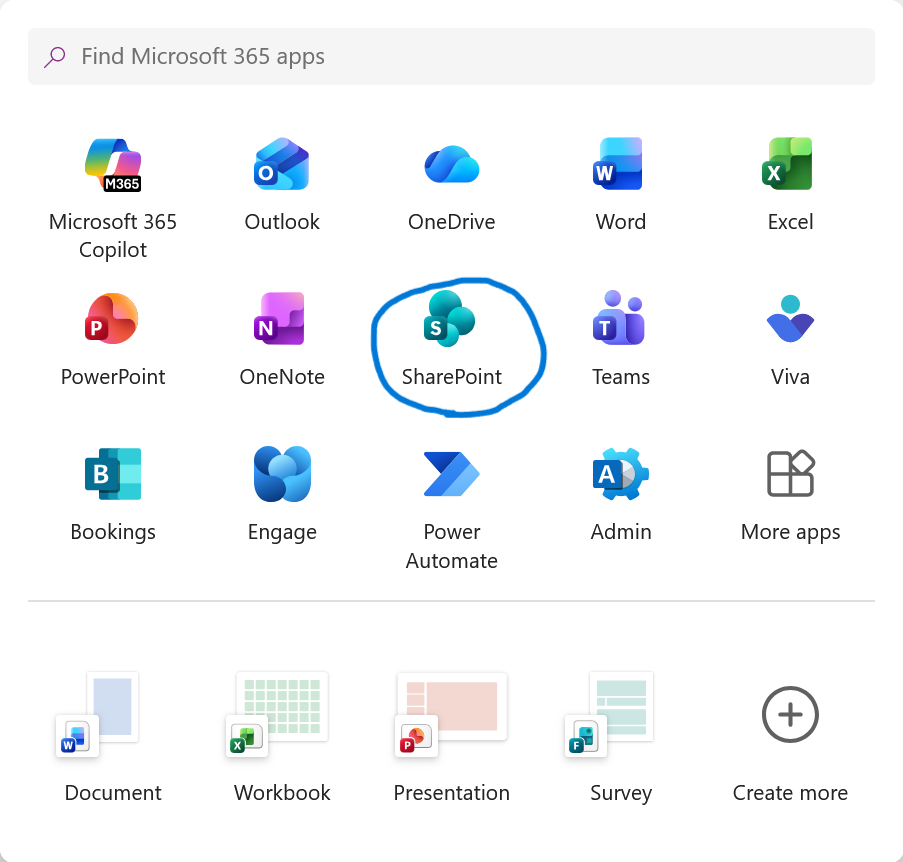
-
Du hamnar nu på startsidan för SharePoint. Klicka på + Create site (eller + Skapa webbplats).
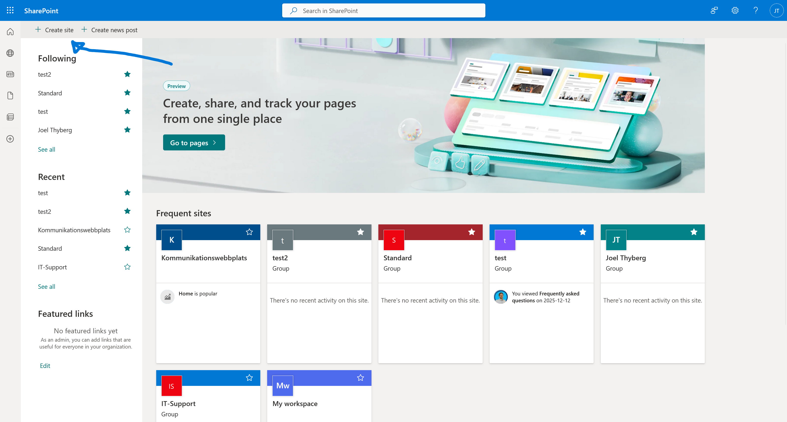
Steg 2: Välj mallen "IT Help Desk"
Nu ska vi välja rätt mall.
-
Du får två val. Välj Team site (Gruppwebbplats).
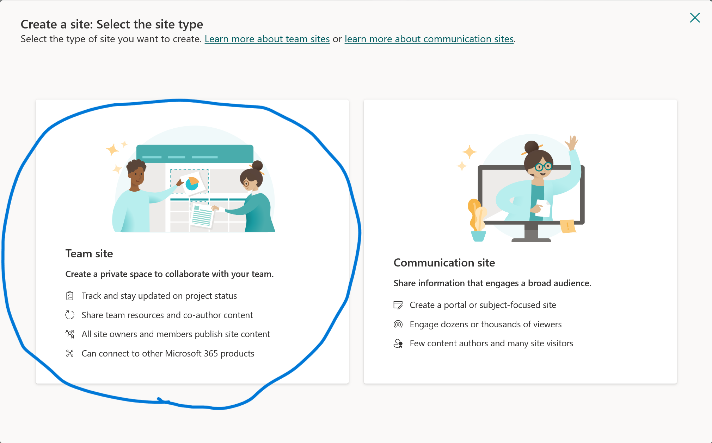
-
Klicka på fliken Templates (Mallar) högst upp.
-
Scrolla ner och klicka på rutan för IT Help Desk.
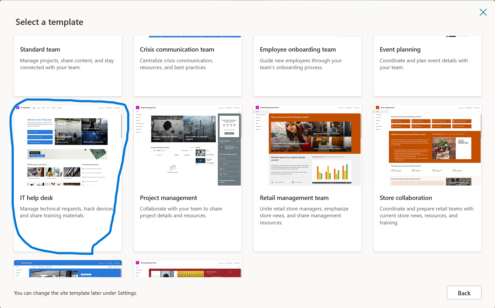
-
Klicka på knappen Use template.
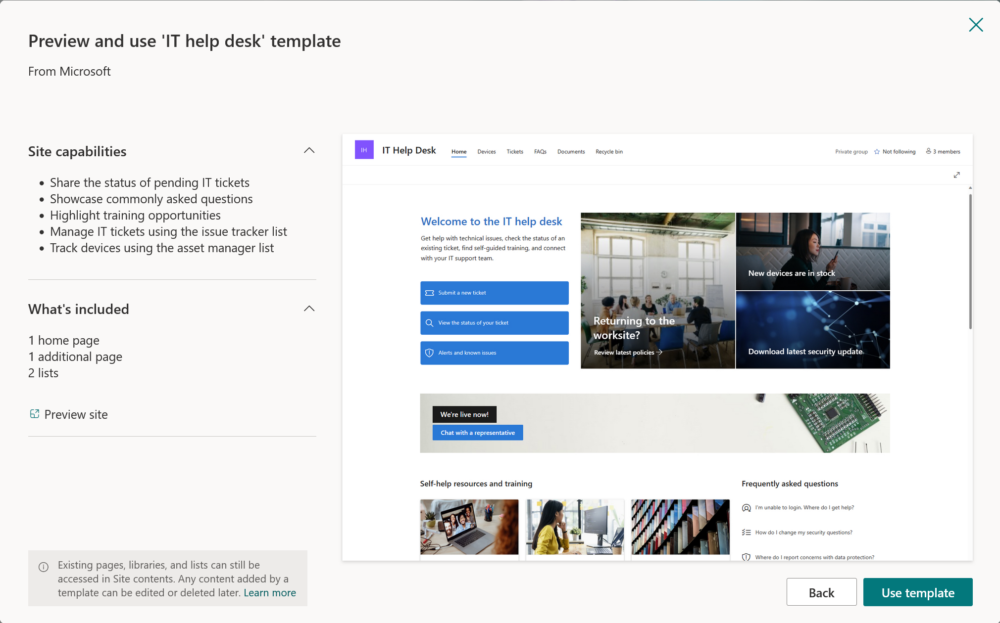
(Om du inte ser mallen, kontakta kursledaren för instruktioner om hur man skapar listan manuellt).
Steg 3: Konfigurera namn och språk (Kritiskt!)
Detta är det viktigaste steget. Vi måste döpa sajten och tvinga den att använda engelska.
- Site name: Döp den till
IT-Support. - Site description: (Valfritt) Skriv en kort beskrivning om du vill.
-
Klicka på knappen Next.
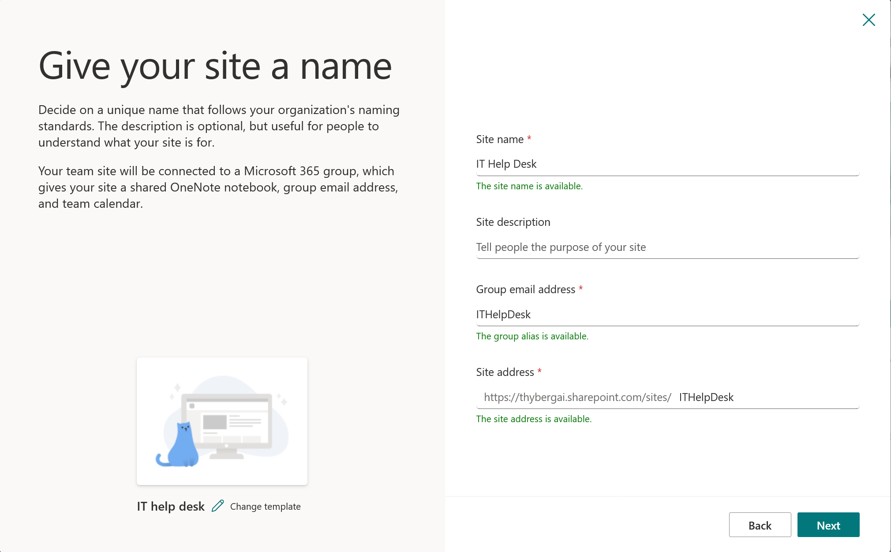
-
Nu får du välja språk. Det är mycket viktigt att det står English här. Om det är förvalt något annat (t.ex. Swedish), klicka på rullgardinsmenyn och ändra till English.
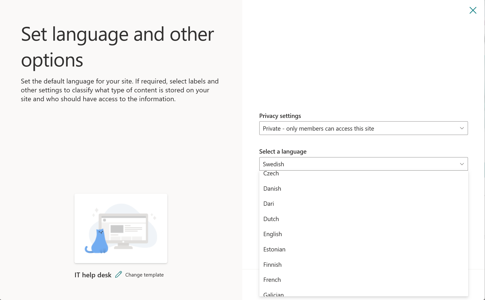
Välj Engelska!
Även om du föredrar svenska menyer MÅSTE du välja English här.
Om du väljer svenska kommer de interna namnen på kolumnerna heta saker som
Enhetstypistället förDeviceType, vilket gör att din Copilot inte kommer kunna läsa datan i senare övningar. -
Klicka på Create site.
Vänta några sekunder medan sajten skapas...
-
När sajten är skapad kommer en ruta där du kan lägga till medlemmar. Vi behöver inte göra det nu. Klicka bara på Finish.
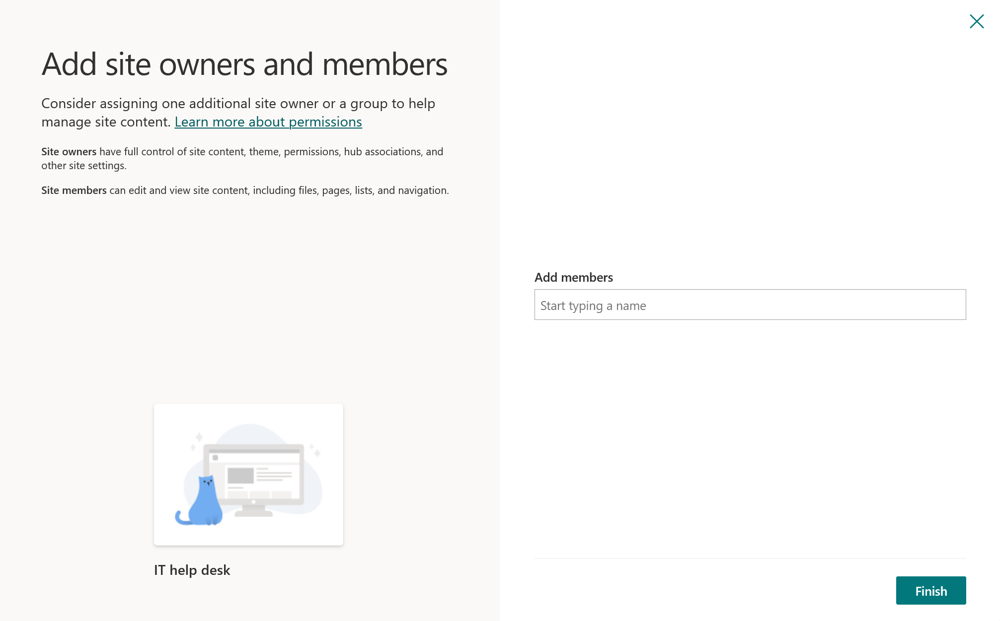
Du skickas nu automatiskt till den nya sajten.
Steg 4: Anpassa listan "Devices"
Mallen har skapat en lista åt oss som heter Devices, men vi behöver lägga till bilder på produkterna.
-
På din nya sajt, klicka på fliken Devices i toppmenyn (eller under "Site contents").

-
Scrolla längst till höger i listan tills du ser knappen + Add column. Klicka på den.
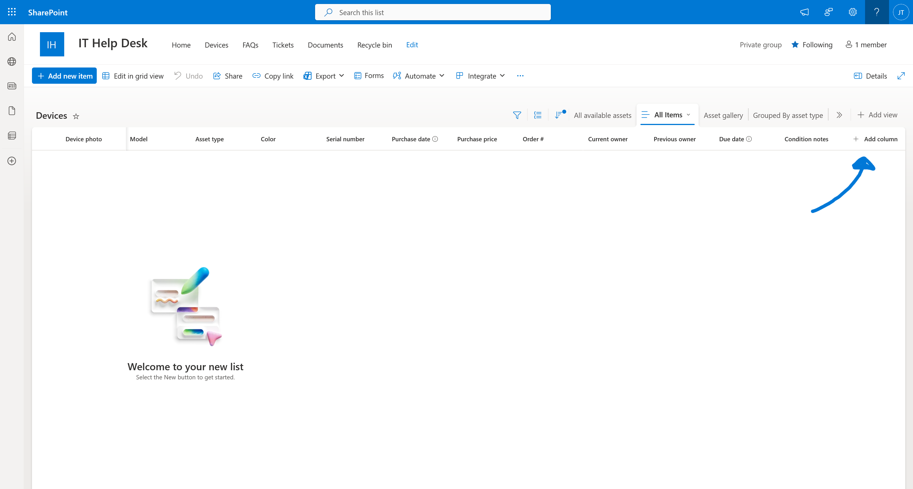
-
I menyn som dyker upp, scrolla ner och välj Hyperlink.
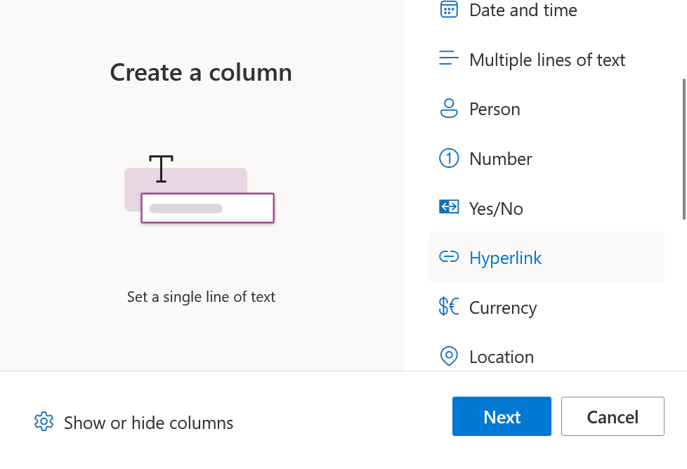
-
Döp kolumnen till
Image. -
Klicka på Save.
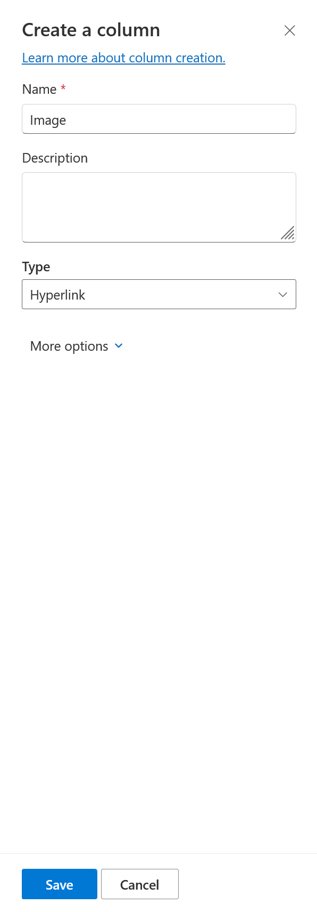
Varför gör vi detta?
För att vår AI-agent ska kunna visa bilder i chatten behöver den en direktlänk (URL) till bilden. Det inbyggda bildfältet i SharePoint är svårt för agenten att läsa, så vi skapar en enkel länkkolumn istället.
Steg 5: Lägg in testdata
Nu ska vi fylla listan med 4 produkter.
-
Klicka på knappen + Add new item (eller New) uppe till vänster i listan.
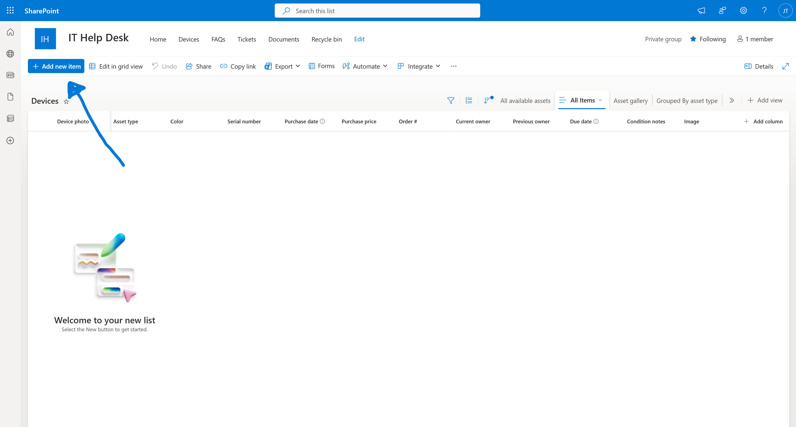
-
En ruta öppnas till höger. Här fyller du i informationen för produkten (se tabellerna nedan).
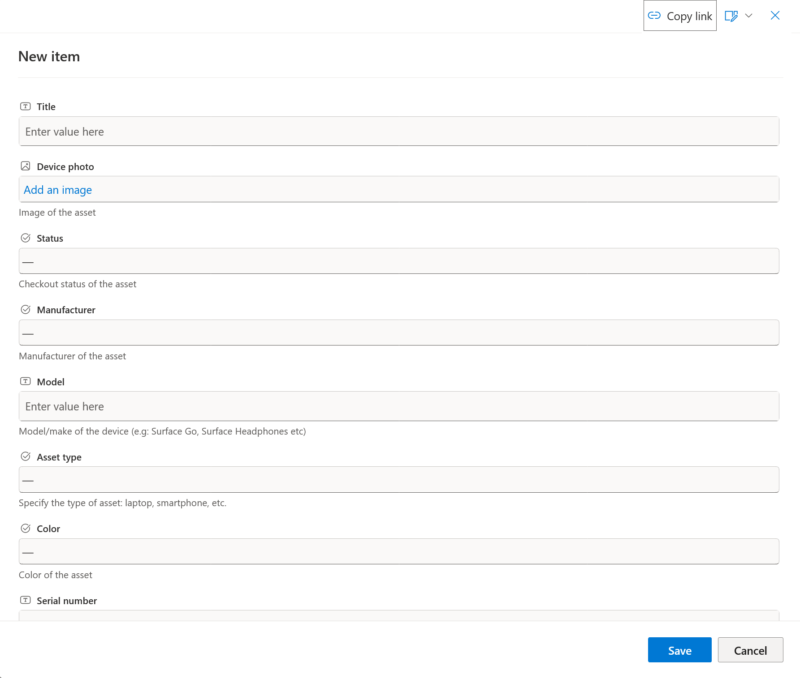
Viktigt om bilder
Lämna fältet 'Device photo' tomt! Vi ska inte ladda upp några filer.
Gör istället så här: 1. Scrolla ner i formuläret till fältet Image (som vi skapade i förra steget). 2. Kopiera länken (URL:en) från rutan under respektive produkt här nedanför. 3. Klistra in den i Image-fältet i SharePoint.
1. Surface Laptop 13

- Title: Surface Laptop 13
- Status: Available
- Manufacturer: Microsoft
- Model: Surface Laptop 13
- Asset Type: Laptop
- Color: Silver
- Serial Number: 1
- Price: 1500
- Order #: 10001
- Image:
https://tyto-official.github.io/copilot-studio-course/assets/images/products/surface-laptop-13.png
2. Surface Laptop 15

- Title: Surface Laptop 15
- Status: Available
- Manufacturer: Microsoft
- Model: Surface Laptop 15
- Asset Type: Laptop
- Color: Black
- Serial Number: 2
- Price: 2000
- Order #: 10002
- Image:
https://tyto-official.github.io/copilot-studio-course/assets/images/products/surface-laptop-15.png
3. Surface Studio

- Title: Surface Studio
- Status: Available
- Manufacturer: Microsoft
- Model: Surface Studio
- Asset Type: Desktop
- Color: Silver
- Serial Number: 3
- Price: 2500
- Order #: 10003
- Image:
https://tyto-official.github.io/copilot-studio-course/assets/images/products/surface-studio.png
4. Surface Pro

- Title: Surface Pro
- Status: Available
- Manufacturer: Microsoft
- Model: Surface Pro
- Asset Type: Tablet
- Color: Pink
- Serial Number: 4
- Price: 1000
- Order #: 10004
- Image:
https://tyto-official.github.io/copilot-studio-course/assets/images/products/surface-pro-12.png
Klart!
Nu har du en databas fylld med hårdvara. I nästa kapitel ska vi börja bygga själva agenten!